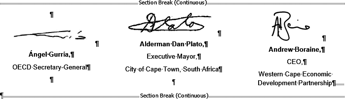
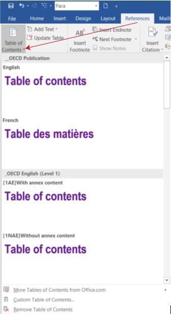
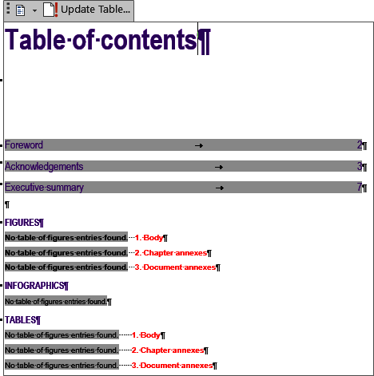
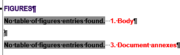
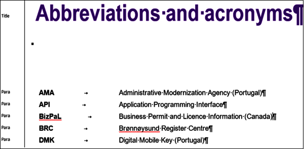
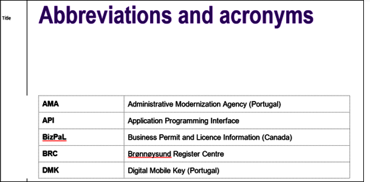
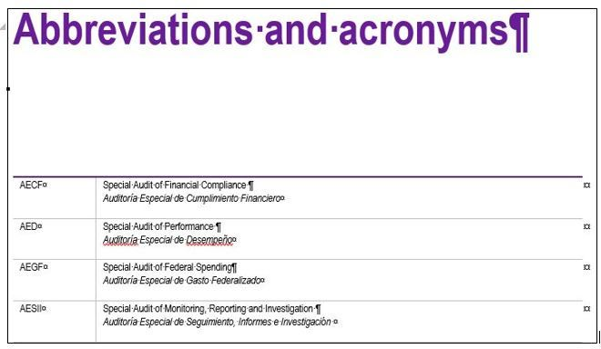

3. Preparing the front matter
Consult Sample O.N.E Author ODPub
The Assessment and recommendations or Overview are numbered chapters and should not be part of the Front matter.
You will find the order of the elements to be placed in the Front matter in the Section 1.9 and in the Front matter formatting model
Each document begins with a cover page. Do not modify or delete the page break, section break or other content controls.
Do not insert an “Introduction” chapter, see OECD Style Guide page 24.
Do not forget to run the Quality Checks
3.1. Preface (signed)
The Preface is usually written and signed by a distinguished person. The Preface is not mandatory and starts on page 2 in the Word file, but it must start on page 3 for the PDFX/PDFO files.
3.1.1. How to insert signatures in O.N.E Author
Please use style Para (Alt+P) and centre the paragraphs in all the following steps.
1Consult a good quality picture
2Apply bold on the name, surname, comma and press Enter.
3Write job title, comma and press Enter.
If you have two signatures or more:
4Repeat steps 1 to 3.
5Insert an empty paragraph between each signature.
6Do not forget to insert a Section Break Continuous before the first signature and after the last.
7Select all paragraphs and insert two columns using Word’s feature (Layout/Columns/Two).

Or
All manual line break will be kept on digital outputs they may create blank spaces. Use them carefully.
3.2. Foreword (not signed)
The Foreword starts on page 2 or following the Preface (see Section 1.9), but it must start on page 3 for the PDFX/PDFO files.
3.3. Acknowledgements, contributors and credits
For more information see Section 1.9 and Style Guide
3.4. Editorial
The Editorial is mandatory for Outlook and At a Glance publications. For more information see Section 1.9.
3.5. Table of contents
See _ESSENTIALS: Table of contents (TOC)
You can insert a pre-styled OECD Table of contents and list of figures/infographics/tables via tab References/Table of Contents/_OECD Publications.

Tip
If the publication is in English or in a third language (example: Spanish), choose an _OECD Publication/English ToC. For the French publication, choose _OCDE Publication/French ToC.
The default Table of contents contains all the figures and tables in a document. Text in red indicates the section to which the tables or graphs belong.

Unnecessary lines may be deleted.
As an example, if there is no figure in the Chapter Annex, the line must be deleted manually.

3.6. StatLinks box and Social Media box
Don't forget to insert a StatLinks box or Social Media box
3.7. Reader’s guide
Can include abbreviations and acronyms, notes, references, boxes, figures and tables (see Section 1.9) and Style Guide
3.8. Abbreviations and acronyms
1You can present the elements as part of a list. Then put a single tabulation between the glossary term and the definition and apply Para style.

2Or, present them as a table with 2 columns and the appropriate styles. Glossary term in the first column (style Table Row) and definition in the second column (style Table Cell) and align on left.

3Presentation of acronyms or abbreviations when there are two definitions for a term.

3.9. Executive summary
All OECD publications must contain an executive summary. The executive summary is also of value as a document that can be readily translated into other languages (multilingual summaries).
The Executive summary must not exceed 1 000 words or 2 pages. Sometimes translations may be longer, see OECD Style Guide
Tip
Do not insert elements such as a key box, In brief, tables, graphs, boxes, notes, cross-references and references in the Executive summary section.
3.10. Infographics
An infographic is a visual representation of information, data or knowledge intended to present information quickly and clearly. The infographic placed before or after the Executive summary will be a component on OECD iLibrary. See Section 6.5.